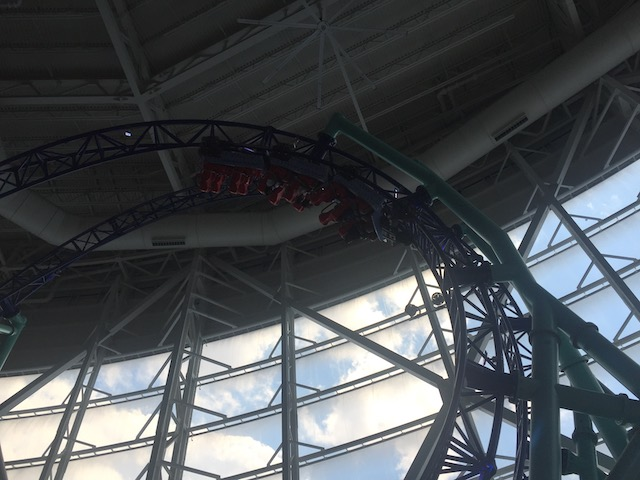

| |
Sandy's Blasting Bronco Review

We're here at Nickeldeon Universe (American Dream). Today's ride we'll be reviewing for you is Sandy's Blasting Bronco. This is a bizarre little compact coaster. There isn't anything like this in the world, which....considering the layout and size of this ride, is actually quite surprising. This totally seems like something that could become an easily cloneable coaster. It's small, compact, a ton of fun, and definately seems like something that could easily be mass produced. Let's hop in the cars, pull down the lap bars, and get riding. We launch immedietly out of the station. It's a pretty strong launch. Nothing too extreme or , but still pretty strong and just a ton of fun. And of course, we immedietly go straight into an Immelmann Loop. And while this isn't the strongest version, it's still pretty intense. And it's just a ton of fun. You don't lose too much speed going into this. It's just a really fun element. And from there, we go straight into ANOTHER Immelmann Loop. And just like with the first one, we rip straight through it. It's good enough as is. But having two of them back to back, that just makes it far better. Having two back to back does more than double the enjoyment of both element. And we then go through an element called a Roll-Over to RCDB. It's basically a Sea Serpent Roll, as....they also list the ones on Vekoma SLCs as Sea-Serpent Rolls. Except....it's a lot more fun here. Both because its smooth, but also. Doing this right after two Immelmann Loops just feels really trippy. We then head out of this and glide back into the station. Phew. That may have been a short ride. But it sure was a fun....wait a minute. They're not letting us out. And...we're turning around. Yep. Now we get to do the entire thing BACKWARDS!!! And that only really makes it far more trippy. I'm not sure why rides feel more trippy backwards, but they just do! So after you do it backwards, we turn the train back forewards, and let us off. DAMN!!! This ride is SUPER FUN!!! Dear other parks, PLEASE BUY THIS RIDE!!! It's just SUCH A FUN RIDE!!! It would be just as good of an investment as a Premier Sky Rocket, and while those rides are a ton of fun, this is unquestionably better. I'm guessing this had a lot of technical problems, which is probably scaring other parks away from building clones. Well, at least that just gives American Dream a far more unique coaster, which makes it far more valuable. Any park looking for a fun compact coaster, this is a great layout.
8/10
Location: Nickelodeon Universe (American Dream)
Opened: 2020
Built by: Intamin
Last Ridden: June 15, 2021
Sandy's Blasting Bronco Photos




Home
|